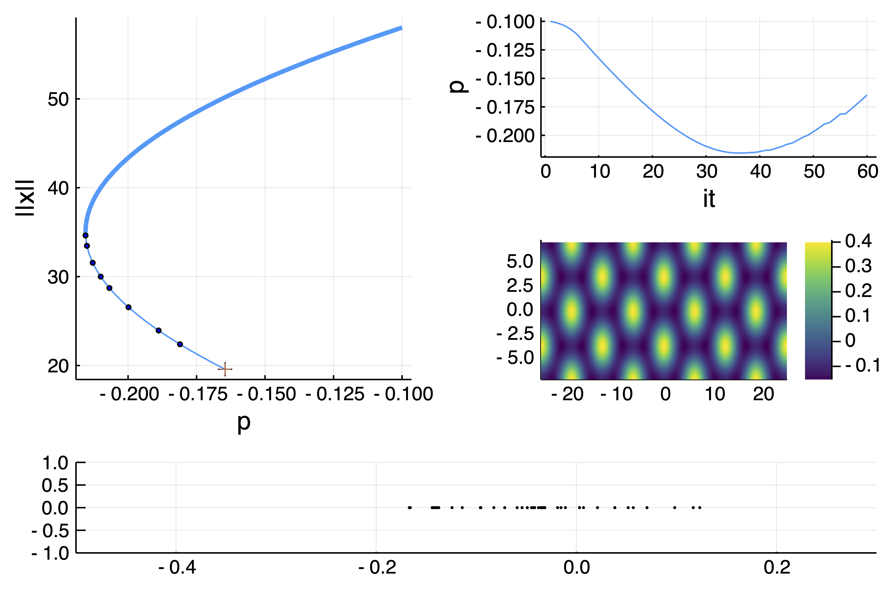
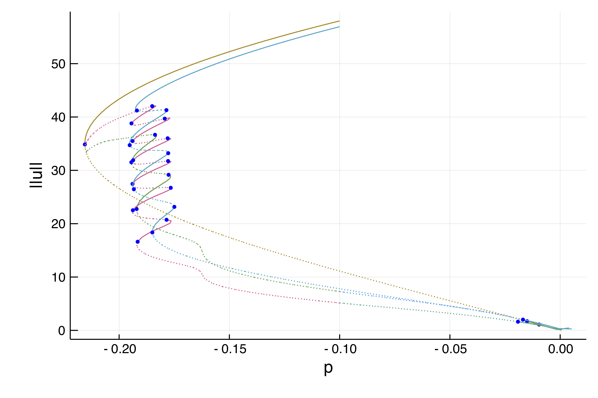

Snaking in the 2d Swift-Hohenberg equation
We study the following PDE
with Neumann boundary conditions. This full example is in the file example/SH2d-fronts.jl. This example is also treated in the MATLAB package pde2path. We use a Sparse Matrix to express the operator $L_1=(I+\Delta)^2$
using DiffEqOperators, Setfield, Parameters
using BifurcationKit, LinearAlgebra, Plots, SparseArrays
const BK = BifurcationKit
# helper function to plot solution
heatmapsol(x) = heatmap(reshape(x,Nx,Ny)',color=:viridis)
Nx = 151
Ny = 100
lx = 4*2pi
ly = 2*2pi/sqrt(3)
# we use DiffEqOperators to compute the Laplacian operator
function Laplacian2D(Nx, Ny, lx, ly)
hx = 2lx/Nx
hy = 2ly/Ny
D2x = CenteredDifference(2, 2, hx, Nx)
D2y = CenteredDifference(2, 2, hy, Ny)
Qx = Neumann0BC(hx)
Qy = Neumann0BC(hy)
A = kron(sparse(I, Ny, Ny), sparse(D2x * Qx)[1]) + kron(sparse(D2y * Qy)[1], sparse(I, Nx, Nx))
return A, D2x
endWe also write the functional and its Jacobian which is a Sparse Matrix
function F_sh(u, p)
@unpack l, ν, L1 = p
return -L1 * u .+ (l .* u .+ ν .* u.^2 .- u.^3)
end
function dF_sh(u, p)
@unpack l, ν, L1 = p
return -L1 .+ spdiagm(0 => l .+ 2 .* ν .* u .- 3 .* u.^2)
endWe first look for hexagonal patterns. This is done with
X = -lx .+ 2lx/(Nx) * collect(0:Nx-1)
Y = -ly .+ 2ly/(Ny) * collect(0:Ny-1)
# initial guess for hexagons
sol0 = [(cos(x) + cos(x/2) * cos(sqrt(3) * y/2) ) for x in X, y in Y]
sol0 .= sol0 .- minimum(vec(sol0))
sol0 ./= maximum(vec(sol0))
sol0 = sol0 .- 0.25
sol0 .*= 1.7
heatmap(sol0',color=:viridis)
# define parameters for the PDE
Δ, _ = Laplacian2D(Nx, Ny, lx, ly)
L1 = (I + Δ)^2
par = (l = -0.1, ν = 1.3, L1 = L1)
# newton corrections of the initial guess
optnewton = NewtonPar(verbose = true, tol = 1e-8, maxIter = 20)
sol_hexa, _, _ = @time newton(F_sh, dF_sh, vec(sol0), par, optnewton)
println("--> norm(sol) = ",norm(sol_hexa,Inf64))
heatmapsol(sol_hexa)which produces the results
Newton Iterations
Iterations Func-count f(x) Linear-Iterations
0 1 1.7391e+02 0
1 2 5.0465e+03 1
2 3 1.4878e+03 1
3 4 4.3529e+02 1
4 5 1.2560e+02 1
5 6 3.5512e+01 1
6 7 9.5447e+00 1
7 8 2.1763e+00 1
8 9 3.3503e-01 1
9 10 7.7259e-02 1
10 11 7.4767e-03 1
11 12 7.9505e-05 1
12 13 8.8395e-09 1
1.480938 seconds (3.55 k allocations: 659.404 MiB)with sol_hexa being

Continuation and bifurcation points
We can now continue this solution as follows. We want to detect bifurcations along the branches. We thus need an eigensolver. However, if we use an iterative eigensolver, like eig = EigArpack(), it has trouble computing the eigenvalues. One can see that using
# compute the jacobian
J0 = dF_sh(sol_hexa, par)
# compute 10 eigenvalues
eig(J0, 10)The reason is that the jacobian operator is not very well conditioned unlike its inverse. We thus opt for the shift-invert method (see Eigen solvers for more information) with shift 0.1:
eig = EigArpack(0.1, :LM)If we want to compute the bifurcation points along the branches, we have to tell the solver by setting detectBifurcation = 2. However, this won't be very precise and each bifurcation point will be located at best at the step size precision. We can use bisection to locate this points more precisely using the option detectBifurcation = 3 (see Detection of bifurcation points for more information).
We are now ready to compute the branches:
optcont = ContinuationPar(dsmin = 0.0001, dsmax = 0.005, ds= -0.001, pMax = 0.00, pMin = -1.0,
newtonOptions = setproperties(optnewton; tol = 1e-9, maxIter = 15), maxSteps = 125,
detectBifurcation = 3, nev = 40, detectFold = false,
dsminBisection =1e-7, saveSolEveryStep = 4)
optcont = @set optcont.newtonOptions.eigsolver = EigArpack(0.1, :LM)
br, u1 = @time BK.continuation(F_sh, dF_sh,
sol_hexa, par, (@lens _.l), optcont; plot = true, verbosity = 3,
tangentAlgo = BorderedPred(),
plotSolution = (x, p; kwargs...) -> (heatmap!(X, Y, reshape(x, Nx, Ny)'; color=:viridis, label="", kwargs...);ylims!(-1,1,subplot=4);xlims!(-.5,.3,subplot=4)),
printSolution = (x, p) -> norm(x),
normC = x -> norm(x, Inf))Note that we can get some information about the branch as follows. The [converged] indicates if the bisection routine was successful, otherwise it shows [guess]. Finally δ = ( 2, 0) says that the bifurcation point has been detected by 2 new eigenvalues with zero real part among which zero have non zero imaginary part. A Hopf bifurcation point would thus have δ = ( 2, 2) or δ = ( -2, 2).
julia> br
Branch number of points: 98
Branch of Equilibrium
Bifurcation points:
(ind_ev = index of the bifurcating eigenvalue e.g. `br.eig[idx].eigenvals[ind_ev]`)
- # 1, bp at p ≈ -0.21554724 ± 3e-07, step = 35, eigenelements in eig[ 36], ind_ev = 1 [converged], δ = ( 1, 0)
- # 2, bp at p ≈ -0.21551263 ± 9e-06, step = 36, eigenelements in eig[ 37], ind_ev = 2 [converged], δ = ( 1, 0)
- # 3, bp at p ≈ -0.21499087 ± 7e-05, step = 38, eigenelements in eig[ 39], ind_ev = 3 [converged], δ = ( 1, 0)
- # 4, bp at p ≈ -0.21289710 ± 8e-05, step = 41, eigenelements in eig[ 42], ind_ev = 4 [converged], δ = ( 1, 0)
- # 5, nd at p ≈ -0.20993438 ± 2e-04, step = 43, eigenelements in eig[ 44], ind_ev = 6 [converged], δ = ( 2, 0)
- # 6, nd at p ≈ -0.20628011 ± 6e-04, step = 45, eigenelements in eig[ 46], ind_ev = 8 [converged], δ = ( 2, 0)
- # 7, bp at p ≈ -0.19981594 ± 9e-05, step = 48, eigenelements in eig[ 49], ind_ev = 9 [converged], δ = ( 1, 0)
- # 8, bp at p ≈ -0.18868881 ± 2e-04, step = 52, eigenelements in eig[ 53], ind_ev = 10 [converged], δ = ( 1, 0)
- # 9, bp at p ≈ -0.18103471 ± 8e-06, step = 55, eigenelements in eig[ 56], ind_ev = 11 [converged], δ = ( 1, 0)
- # 10, bp at p ≈ -0.14472469 ± 6e-04, step = 64, eigenelements in eig[ 65], ind_ev = 11 [converged], δ = (-1, 0)
- # 11, bp at p ≈ -0.13818751 ± 6e-04, step = 66, eigenelements in eig[ 67], ind_ev = 10 [converged], δ = (-1, 0)We get the following plot during computation:

We don't need to call newton first in order to use continuation.
Snaking computed with deflation
We know that there is snaking near the left fold. Let us look for other solutions like fronts. The problem is that if the guess is not precise enough, the newton iterations will converge to the solution with hexagons sol_hexa. We appeal to the technique initiated by P. Farrell and use a deflated problem (see DeflationOperator and DeflatedProblem for more information). More precisely, we apply the newton iterations to the following functional $u\to \frac{F_{sh}(u)}{\Pi_{i=1}^{n_s} \|u-sol_{hexa,i}\|^p + \sigma}$ which penalizes sol_hexa.
# this define the above penalizing factor with p=2, sigma=1, norm associated to dot
# and the set of sol_{hexa} is of length ns=1
deflationOp = DeflationOperator(2.0,dot,1.0,[sol_hexa])
optnewton = @set optnewton.maxIter = 250
outdef, _, flag, _ = @time newton(F_sh, dF_sh,
0.2vec(sol_hexa) .* vec([exp.(-(x+lx)^2/25) for x in X, y in Y]),
par, optnewton, deflationOp, normN = x -> norm(x,Inf64))
heatmapsol(outdef) |> display
flag && push!(deflationOp, outdef)which gives:

Note that push!(deflationOp, outdef) deflates the newly found solution so that by repeating the process we find another one:
outdef, _, flag, _ = @time newton(F_sh, dF_sh,
0.2vec(sol_hexa) .* vec([exp.(-(x)^2/25) for x in X, y in Y]),
par, optnewton, deflationOp, normN = x -> norm(x,Inf64))
heatmapsol(outdef) |> display
flag && push!(deflationOp, outdef)
Again, repeating this from random guesses, we find several more solutions, like for example


We can now continue the solutions located in deflationOp.roots
br, _ = @time continuation(F_sh, dF_sh,
deflationOp[2], par, (@lens _.l), optcont;
plot = true,
plotSolution = (x, p; kwargs...) -> (heatmap!(X,Y,reshape(x,Nx,Ny)'; color=:viridis, label="", kwargs...)))and using plot(br), we obtain:

Note that the plot provides the stability of solutions and bifurcation points. Interested readers should consult the associated file example/SH2d-fronts.jl in the example folder.